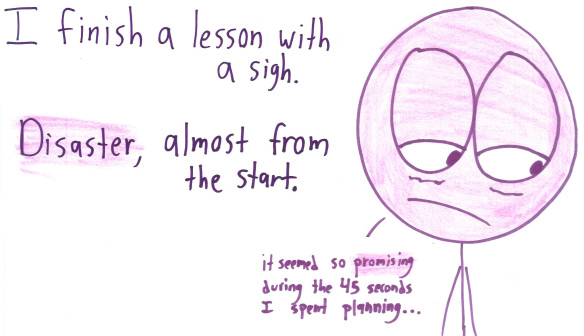
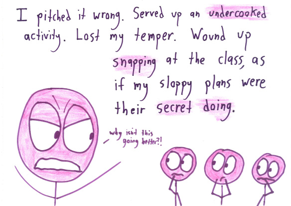
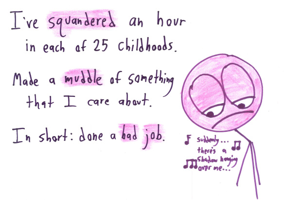
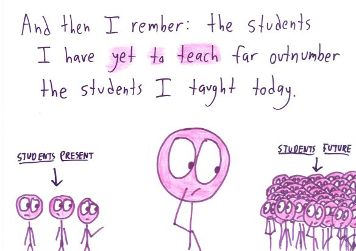
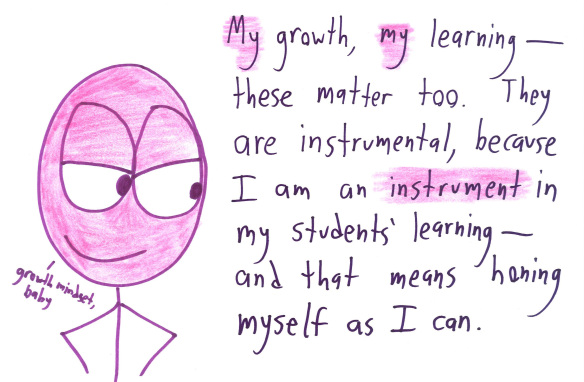

The Rest Is Yet To Come
I co-taught an instructor training workshop earlier this week, then taught a second one on my own a couple of days later. I made some pretty big mistakes in both: I kept interrupting my co-instructor in the first, while in the second, I told too too many stories, made jokes about hipsters and Javascript programmers when I’d told participants not to belittle people in class, and shut down discussion a couple of times when I had no authority to do so.
I have another workshop this week. I’d like to do better, so I’m going to give myself two sets of three sticky notes each day. (Sticky notes are the duct tape of teaching…) Each time I stray from the schedule, I’ll take down one from the first set; each time I tell a story, I’ll take one down from the second. It’s no guarantee that I’ll do better, but not doing something proactively pretty much guarantees that I won’t.
It’s never fun to find out that you still have work to do, particularly on something you’ve been working on for years. When it happens, I tell myself the same thing as Ben Orlin:





(For more of Ben Orlin’s wonderful work, see Math With Bad Drawings.)